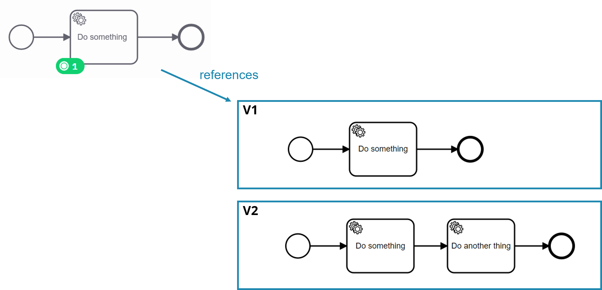
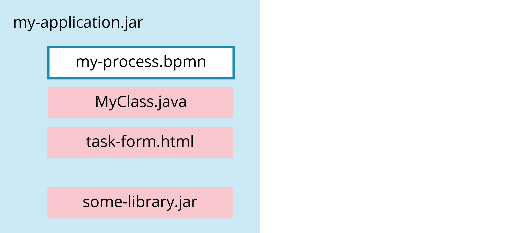
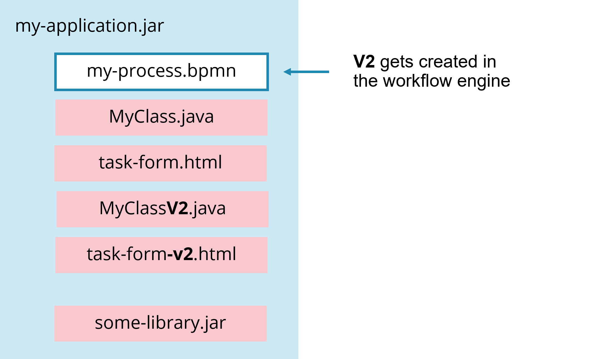

Versioning process definitions
For real-life applications, it's crucial to understand how Camunda deals with evolving process definitions by means of versioning. As a rule of thumb, we recommend to version just the process and decision models, but not other process solution artifacts (like e.g. code classes or scripts). Often you might not even want to run multiple model versions at the same time, then you have to think about migrate running process instances to new versions. When modeling very long-running processes (> 6 months), consider cutting them into reasonable pieces to ease managing your versioning requirements.
Understanding versioning
By default, deploying a process or decision definition means that the workflow engine will check if the version has changed. If it has, it will register that deployment as a new version of the definition. By default, running instances will continue to run on the basis of the version they started with, new instances will be created based on the latest version of that definition.

Selecting the best versioning approach
Running versions in parallel
You can run several versions of a model in parallel.
The big advantage of that default behavior is that you can deploy changed process definitions without caring about running process instances. The process engine is able to manage running instances based on different process definitions in parallel.
The disadvantage is that one needs to deal with the operational complexity of different versions of the process running in parallel as well as the additional complexity in case those processes call subprocesses which have different versions of their own.
Run versions in parallel for
- Development or test systems for which you do not care about old instances
- Phasing out existing instances as the existing instances need to finish based on the model they where created with, which often has legal reasons.
- Situations in which migration is not advisable, because it is too complex and too much effort when weighed against its upsides.
Migrating process instances to a new version
This description is Camunda 7 specific, but with Camunda 8 you can migrate process instances in a similar fashion. Read more about the concept in Camunda 8 here.
Migrate running instances to the newest definition when:
- Deploying patches or bug fixes of a process model.
- Avoiding operational complexity due to different versions running in production is a priority.
Migrating process instances can be achieved either programmatically or by using the operations tooling. Programmatically, you need to create a migration plan that describes how process instances are to be migrated from one process definition to another.
// Sample code from Camunda 7.x:
MigrationPlan migrationPlan = processEngine.getRuntimeService()
.createMigrationPlan("exampleProcess:1", "exampleProcess:2")
.mapActivities("assessCreditWorthiness", "assessCreditWorthiness")
.mapActivities("validateAddress", "validatePostalAddress")
.mapActivities("archiveApplication", "archiveApplication")
.build();
You can then apply such a plan to a set of process instances selected by you.
Learn more about process instance migration in Camunda 7 in the user guide. You can also learn about how to use Camunda 7's cockpit there. An interesting option is, that you can export the migration plan you configured in Cockpit as JSON string. This migration plan can be applied later via REST-API, making it possible to fully automate migration even if you do not want to program a migration plan in Java.
It's important to understand that process instance migration maintains the full 'identity' of the migrated process instances including their unique IDs and their full history audit trail. However, as the process definition also might change fundamentally in between versions, this can have effects on the history log of a process instance which might be unexpected from an end user's or operator's perspective.
Things to consider before migration
When planning your migration, here are some factors to consider:
- Do I have a good reason to migrate? Technically, you do not have to migrate process instances when using Camunda. Previous process definition instances will simply continue to run as intended (with some important caveats, note other things to consider below). Here are some examples of good reasons to migrate:
- Your supporting implementation resources have changed.
- Your latest process definition represents a substantial change in your business process.
- Your latest process definition fixes a bug.
- Your latest process definition enforces some time-sensitive legal obligations or rules.
- How big of a difference is there between process definition versions? Not only the definition itself, but the data required to be present at any given time in your instance.
- Did supporting implementation resources change from the previous deployment? If a service implementation changes in the new deployment and the reference to the implementation did not change from the previous deployment, then older process instances that are in flight will utilize the newer implementation by default upon deployment of the new resources. If that breaks older instances, then you must migrate.
- Do I have a proper infrastructure to support “real data” testing of my migration plan? This might be the most important aspect. An ideal way to test your process instance migration would be to have prod-like data in some kind of staging environment that represents not only the type and quality of existing production data, but also volume, scale, and size. You run your migration plan there so that you know what to expect when it comes time to migrate in production. You also need the ability to quickly reset this data via some kind of snapshot, so that you can test over and over again. You can expect many iterations of your migration plan before you move forward with a solid plan.
For Camunda 7 users there is some more information available in these migration examples.
Avoid versioning of dependant artifacts
When versioning process or decision definitions, you need to be aware that the process of course communicates with the outside world, e.g. by calling services or by using forms to collect data input from human users. All the additional artifacts needed for that might depend on the details of each other in a subtle way.
Whenever possible, we recommend that you avoid to version other artifacts beyond the process and/or decision definitions, in other words, just version '.bpmn' and '.dmn' files by using the default mechanism of the process engine. Embed all other artifacts (like e.g. classes, templates, scripts) into your normal application (for example a Java or Node.js application) and don't version them.
Of course, this approach requires that you manage the subtle differences needed by running process instances of old versions. There are various options to do that. And even if some of those options discussed below might not sound 'ideal' from a theoretical point of view, they proved to be good enough for real life purposes and much easier to understand than complex approaches. As understandability by every team member is a very important argument, we recommend going for the approach that is as simple as possible.
The following options us a Java example of a process solution, containing not only the process model, but also some Java code and an HTML form:

Option 1: Keep the artifacts backwards compatible
Extend the functionality of e.g. a method in MyClass.java in a way which can still deal with "old" process instances.
public class MyClass {
public void doSomething(Long customerId) {
if(customerId != null) { // <1>
// new code introduced
}
}
}
Assume you introduced a customerId in the new version of the process. Your code can still deal with old cases not aware of a customerId.
Option 2: Introduce a new artifact for different versions
Change the artifact and add a new version of it to the application. Now you can reference this new artifact from your new version of the process definition, while the old version will continue to use the first version of it.
For example:
- Change the file name for the form from
task-form.htmltotask-form-v2.html - Change the
task typeof a service task fromdoSomethingtodoSomethingV2

Sometimes it is preferable to manage different versions by means of folders/packages. Just make sure to have a clear and straightforward convention to keep track of the versions.
Dealing with long running processes
In general, do not be concerned with deploying long-running processes which might run days, weeks or even months. After all, this is exactly what Camunda was built to properly deal with.
Having said that, also review the possibilities the workflow engine provides with respect to cutting process definitions (e.g. via message exchange or via call activities) and migrating running process instances. But even though it's possible to migrate running process instances to a new version (refer below), it's typically a bit of effort. Therefore, the information presented in the following sections is meant to enable your conscious decision at which points it might make sense for you to avoid the necessity for migration by cutting processes and which aspects of versioning behavior you can control by doing that.
Cutting very long running processes into pieces
The longer the lifespans of process instances are, the bigger the risks that you might want to exchange important software components like e.g. the workflow engine itself. Typically, very long-running, end-to-end processes (running longer than six months) have periods without activity (e.g. waiting for a certain date in the future). Cut the process into several independent process definitions at these points.
1After the mobile phone was shipped, we finish the first process instance and just keep a reminder for the renewal in 24 months.
2We periodically check due renewals and start new process instances whenever necessary.
We typically don't model such processes in one diagram it's shown here as a way to show the message flow. Typically, we would rather use a separate diagram per executable process and either leave out the other process completely or show it as a collapsed pool.
Also try to avoid modeling the complete life-cycle of very long living objects, like a life insurance contract. Only capture the active phases as separate processes (e.g. "Policy Issuing", "Address Change", "Cancellation" or "Death").
Having said this, we want to emphasize that the engine is perfectly fine with handling lots of process instances for a long time. So if you want to have process instances waiting for months or years, you can still do so. Just make sure you think about all resulting implications.
Using call activities to influence versioning behaviour of pieces
With Camunda 8 you cannot yet influence the version of the started process instance via the call activity. This feature is on the roadmap. At the moment, a new process instance of the latest process definition version is started.
When calling separately modeled subprocesses (i.e. Call Activities), the default behavior of the process engine is to call the latest deployed version of that subprocess. You can change this default 'binding' behavior to call a specific version or the version which was deployed together with the parent process.
Keeping in mind pros and cons of versioning as discussed above, we can therefore encapsulate parts of a process, for which we want to be able to change the runtime behavior more often into such call activities. This is an especially useful consideration for long-running processes.
1We could decide that we always want to follow the latest shipping process changes, even if the rules for shipping changed while we are in the order acceptance phase. We for example reason that this acceptance phase could sometimes take a long time, because the procurement for goods currently not shelved happens within that phase.
2Contrary to that, we could decide that the order billing always happens according to the rules valid at the moment we received the order and instantiated the parent process (deployment). We for example reason here that it is critical that the billing follows the rules communicated to the customer together with the offer.